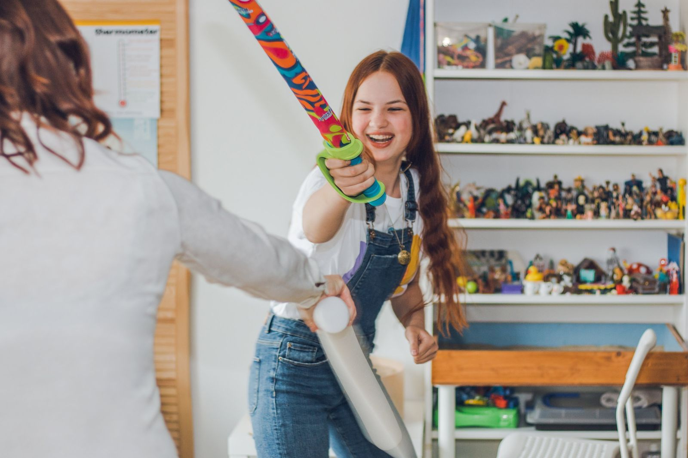
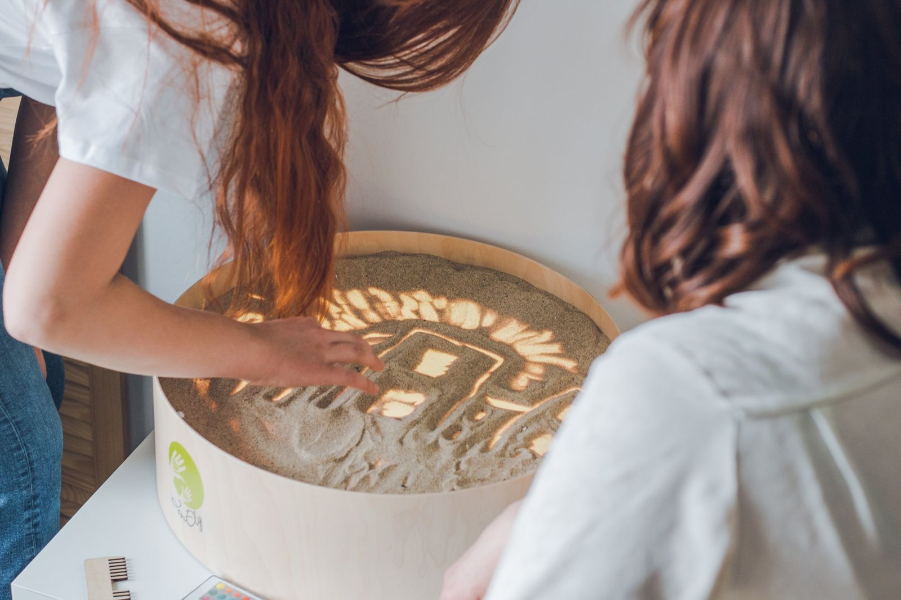
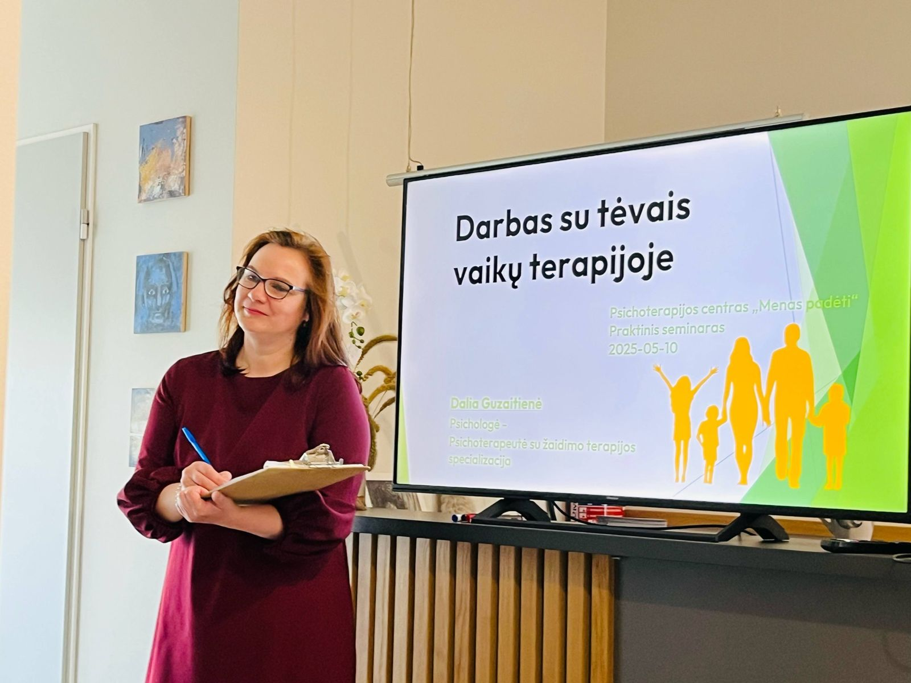
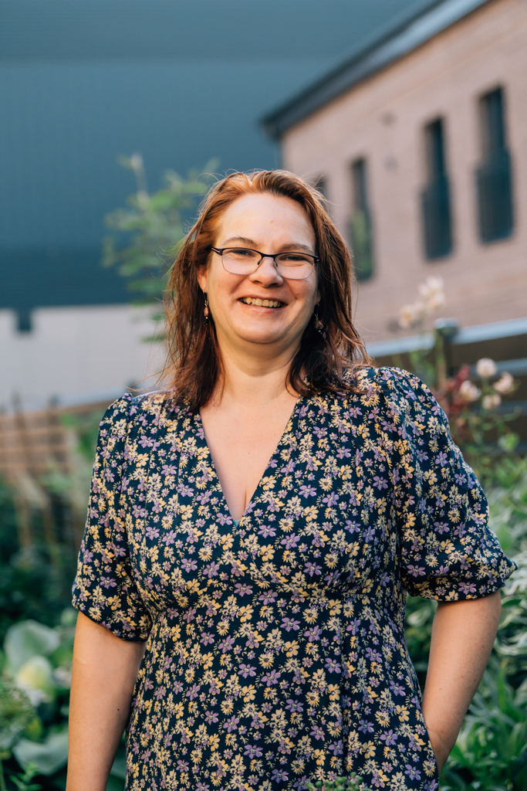
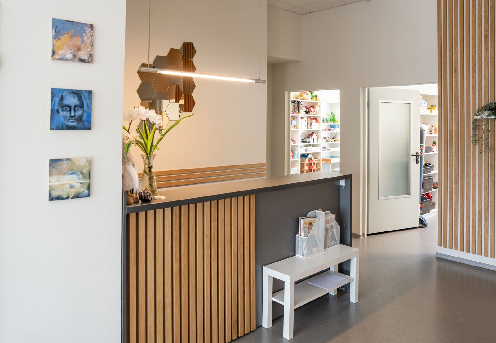

Nedirektyvioji žaidimo terapija
Aštuoni mokymosi blokai Kaune, nuo 2027 m. sausio iki 2028 m. birželio.
Pusantrų metų mokymai specialistams, kurie dirba su ikimokyklinio ir jaunesniojo mokyklinio amžiaus vaikais ir nori išmokti taikyti žaidimo terapiją.
Dėl didelio susidomėjimo registracijos terminas pratęstas iki lapkričio 1 d.


Kodėl verta mokytis žaidimo terapijos
Jei dirbate su vaikais ir jaučiate, kad pokalbis ar įprasti metodai ne visada padeda, tai natūralu. Maži vaikai dar negali papasakoti, kas jiems sunku. Jie tai parodo žaisdami.
Žaidimo terapija yra vaikams itin tinkama psichoterapijos forma. Profesionaliai parengtas žaidimo terapeutas naudoja žaidimą kaip pagrindinę priemonę padėti vaikui įveikti emocinius, elgesio ir kitus psichologinius sunkumus (Schaefer, 1999). Žaidimas yra natūrali vaiko kalba, o žaislai – jo žodžiai (Landreth, 2002).
Tai tyrimais grįstas metodas. Jo veiksmingumą rodo kelios metaanalizės, o humanistinių, nedirektyviųjų metodų rezultatai buvo geresni nei kitų krypčių (Bratton ir kt., 2005).
Mūsų žaidimo terapijos mokymų programa – vienintelė Lietuvoje. Ji parengta pagal tarptautines žaidimo terapeutų rengimo rekomendacijas ir remiasi dr. Garry Landreth bei kitų į vaiką orientuotos žaidimo terapijos atstovų sistema.
Penki dalykai, kuriais tiki į vaiką orientuoti žaidimo terapeutai
Nedirektyvioji žaidimo terapija remiasi ne technikomis, o požiūriu į vaiką.
Žaidimas yra kalba
Žaidimas yra natūrali vaiko kalba, o žaislai – jo žodžiai.
Vaikas žino kelią
Vaikas turi vidinę išmintį, kaip eiti link gerėjimo ir sveikimo.
Vaikas veda
Terapinį procesą veda pats vaikas.
Vaikas yra visavertis
Vaikas yra atsparus, pagarbos vertas žmogus, o ne mažas suaugęs.
Keičia santykis
Svarbiausias pokyčio veiksnys yra pats santykis. Procesas svarbiau nei rezultatas.
Kaip vyks mokymai
Susitiksime maždaug kas du mėnesius, visą savaitgalį, centre Kaune. Sekmadienį pradėsime ir baigsime valanda anksčiau, kad atvykusieji iš toliau spėtų grįžti namo.

- 12027 m. sausio 16–17 d.
- 22027 m. kovo 6–7 d.
- 32027 m. gegužės 22–23 d.
- toliau dar penki blokai, iki 2028 m. birželio
Pirmųjų trijų blokų datos patvirtintos. Kitų blokų datas patikslinsime prasidėjus mokymams.
Ko dažniausiai klausiate
Šie klausimai kyla beveik kiekvienam, kas svarsto stoti. Jei jūsų klausimo čia nėra, parašykite.
Ar suderinsiu mokymus su darbu?
Užsiėmimai vyks savaitgaliais, maždaug kas du mėnesius, tad darbo dienų nereikia. Praktiką dažniausiai galima atlikti savo darbovietėje.
Ką reikės atlikti, kad gaučiau pažymėjimą?
Dalyvauti visuose blokuose, atlikti praktines užduotis, prižiūrimą žaidimo terapijos praktiką su supervizija ir baigiamąjį egzaminą.
Žaidimo terapijos praktika prasideda rudenį, kai jau turite pagrindinius praktinius įgūdžius.
Ar programa akredituota?
Programa įregistruota Neformaliojo švietimo programų registre ir šiuo metu vertinama dėl įtraukimo į Kursuok.lt.
Visapusiška akreditacija, kaip užsienio šalyse, bus įmanoma tik tada, kai atsiras atitinkama įstatyminė bazė ir Žaidimo terapijos asociacija Lietuvoje.
Kiekvienas žaidimo terapijos mokymų dalyvis galės prisidėti prie žaidimo terapijos įteisinimo ir akreditavimo Lietuvoje ir užsienyje.
Ar reikės mokėti anglų kalbą?
Mokymai vyks lietuvių kalba. Kai ves kviestinis užsienio lektorius, užsiėmimas gali vykti anglų kalba, o esant poreikiui bus verčiama.
Dėl lietuviškai kalbančių žaidimo terapijos supervizorių trūkumo bei siekiant išlaikyti išorinės supervizijos nepriklausomumą nuo mokymų organizatorių, vienintelis būdas ją gauti – nuotoliniu būdu su kitų šalių specialistais.
Mes padėsime susirasti ir išsirinkti išorinius supervizorius iš rekomenduojamų supervizorių sąrašo. Pagrindinė kalba čia yra anglų, su galimybe rinktis lenkų ar slovakų kalbą. Bandysime derinti ir rusų kalbos galimybę.
Supervizorių galite susirasti ir patys, jei jo kvalifikacija atitinka žaidimo terapijos supervizavimo reikalavimus.
Kas gali stoti
Programa skirta brandiems specialistams, kurie nori konsultuoti vaikus ir šeimas, dirbti su tėvais ir naudoti kūrybines terapines priemones.
Priimami psichologai, socialiniai darbuotojai, gydytojai, psichoterapeutai, meno ir šeimos terapeutai, turintys magistro laipsnį ir bent 2–3 metų darbo su vaikais patirtį.
Apie stojimo tvarką ir reikiamus dokumentus klauskite info@menaspadeti.lt.
Kaina
Likusią sumą galima mokėti dalimis. Mokymus gali apmokėti ir darbovietė.

Kas veda
Dalia Guzaitienė
Psichologė-psichoterapeutė, žaidimo terapeutė ir supervizorė, vienintelė Lietuvoje psichoterapeutė su žaidimo terapijos specializacija. Humanistinę ir integralią psichoterapiją bei žaidimo terapiją studijavo Airijoje. Žaidimo terapiją praktikuoja nuo 2013 m., mokymus specialistams veda nuo 2017 m.
Rita Bagdonaitė
Psichologė, psichodinaminės psichoterapijos psichoterapeutė, „Neįtikėtinų metų“ programos vedėja ir mokymų konsultantė. Specializuojasi tėvystės įgūdžių, globos ir traumų srityse.
Kviestiniai lektoriai
- Zuzana Dubenkova, žaidimo terapeutė, lektorė, Slovakų-čekų žaidimo terapijos asociacijos prezidentė, supervizorė (Slovakija)
- Joanna Babinska, vaikų, paauglių ir šeimos psichoterapeutė, žaidimo terapeutė ir supervizorė (Lenkija)
- dr. Eimir McGrath, psichologė-psichoterapeutė, žaidimo terapeutė ir supervizorė (Airija)
Kviestinių lektorių užsiėmimų detales patikslinsime prasidėjus mokymams.

Kur
Psichoterapijos centras „Menas padėti“
Savanorių pr. 363B, Kaunas
Užsiėmimai vyks centro patalpose. Papildomai bus mokomasi nuotoliu ir savarankiškai.
Registracija vyksta iki 2026 m. spalio 1 d.
Dėl didelio susidomėjimo registracijos terminas pratęstas iki lapkričio 1 d.
Užpildykite registracijos formą, o jei kyla klausimų, parašykite mums.